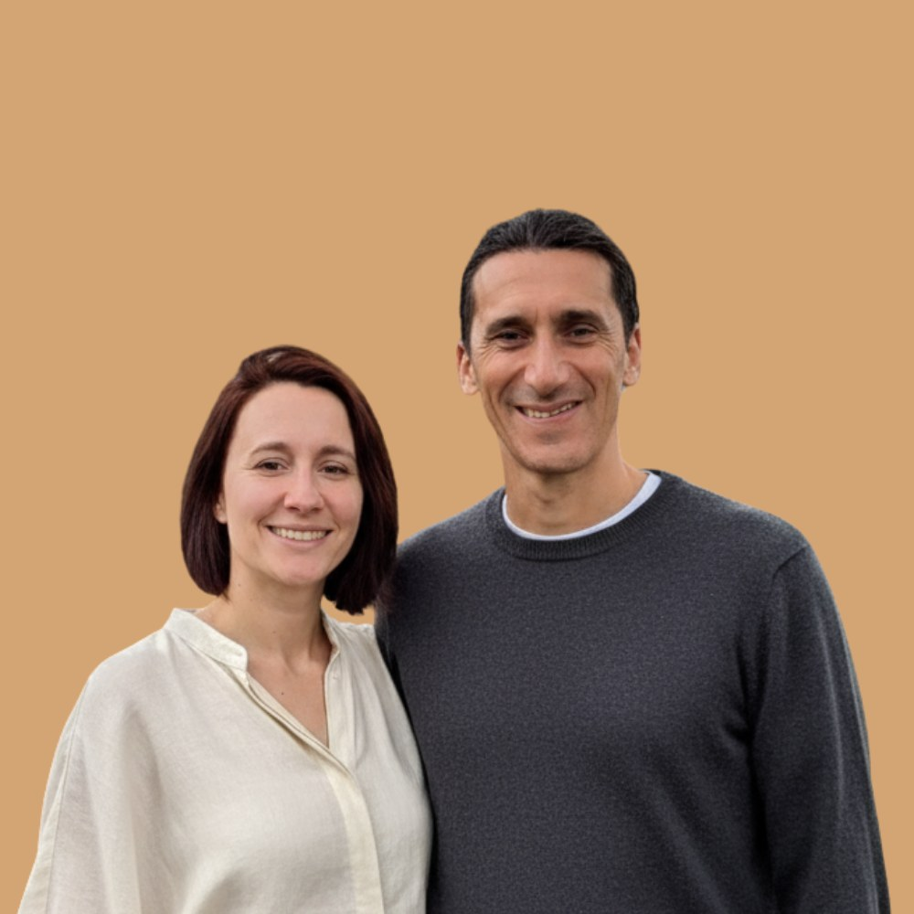

The opening was real. Now let's make it stick.
Sacred Circle - a small-group coaching space for people doing deep inner work who want the changes to actually show up in everyday life.
Each week you commit to one small step, and each week the circle asks how it went. By Anna and Dario.
See Current CohortSacred Circle #12
January to February 2027
Live sessions on Tuesdays at 7:00 PM Central European Time (1:00 PM New York, 10:00 AM Los Angeles).
January 12, 19, 26 / February 2, 9, 16, 23
Enrolling now
Enrollment closes Friday, January 8.
Join Circle #12If these dates don't work for you, join the waitlist and I'll write to you when the next circle is forming.
Why we built this

Hi, we're Anna and Dario.
Dario is an organizational psychologist, IFS practitioner and facilitator with over 20 years working with groups and communities. Trained in South America in traditional practices and rites of passage, he has been holding ceremony space internationally for 20 years.
Anna is a certified Deep Transformational Coach, trained in IFS through Level 3 at the IFS Institute, and a former startup leader. Always curious, always doing her own inner work.
Here's what we kept noticing.
People would have profound experiences in ceremony, retreat, or deep group work. Real openings. Then a few weeks later, they'd be back in the same loops. The insight was genuine. But it faded. People going deeper into the next experience, hoping it would make it stick. Or cycling through different modalities, looking for what would make the change last.
We held that question: what's actually missing?
Then IFS shifted everything for us.
For Anna, it made self-compassion tangible. A practice, with an actual way to meet the part that was afraid, the part that was pushing, the part protecting something. For Dario, it gave structure and language to what he had been witnessing in groups for over two decades.
For us as a couple, it gave us a shared language. A way to talk about what was happening between us without making anyone wrong. We could see the system, understand what was trying to happen, and choose differently.
That's when it clicked.
Ceremony provides the opening. IFS provides the language and the daily practice. Community provides the witness, the steadiness, the people who see you doing it.
There is a long road between information and action. Integration happens in how you live, week after week.
Sacred Circle is our answer. A steady place to come back to yourself, with simple tools that fit real days. So what opened in you, in ceremony, therapy, a retreat, or life itself, doesn't just fade. It becomes how you actually talk to yourself and how you show up.
What happens in a Sacred Circle
Each session is 90 minutes. 7 sessions. 7 weeks. One group.
We open together
A brief breathwork to arrive and land in the body. Then a quick round on how last week went.
A theme is introduced
Each week we bring a concept from IFS or Self-leadership. Just enough to open a door.
We go inside
Guided inner exploration. You meet your parts in real time, with support and space.
We share
People tell their stories. Others witness. No advice, no fixing. Just the power of being seen by people doing the same work. This is often where the most unexpected shifts happen.
We close
What landed. What shifted. The one small step you're taking into the week, said out loud to the group.
Each session follows this arc but no two sessions are the same. The group shapes what emerges.
How the circle holds you to it
Insight is the easy part. The hard part is the rest of the week.
The 8 qualities of Self-leadership
In the circle we move through the eight qualities of Self-leadership: calm, clarity, curiosity, confidence, compassion, courage, creativity and connectedness. They are already in you. They come forward when your parts feel safe enough to step back. Anna writes about them one at a time, and the short practices are free to read.
This is for you if...
What you leave with
Simple pricing
Sacred Circle Cohort
7 sessions over 7 weeks. 90 minutes each. Weekly check-ins with the circle. Small group, max 16. Online via Zoom.
Join Circle #12Euro pricing on request.
What past participants say
Past circles have brought people together from
Last circle, someone came in struggling with the same loop. Big openings in ceremony, then back to the grind, the clarity gone by Thursday. Over seven weeks, she started recognizing when her inner critic was driving. She noticed it, without fighting it. She learned what that part was protecting. The harshness softened. She started making small choices from a calmer place. Nothing dramatic. Just steady. She told us: "I finally feel like I'm living more from that open place, not just visiting it." That's what we mean by everyday change.
"Group support made me actually do the practices. The change stayed."
"I left with a kinder language for myself and more energy for daily life."
"A safe, warm space to integrate with experienced, respectful guides."
"It brought me peace and strength to overcome personal battles in my relationships with people close to me."
"It was nice to find out how I have something similar with each member of the group, to find some of my parts in each person."
"It was my first experience of group coaching in an international community."
Common questions
No. We introduce everything you need as we go. Some participants have deep IFS experience, others are completely new to it. Both are welcome.
No. This is a coaching and self-exploration space. It's not a substitute for therapy. If you're in active crisis, we recommend working with a licensed therapist first.
You get the week's prompt and a short summary, and you still check in with the group in the chat. Sessions are recorded only if everyone in the circle agrees.
Yes. We meet on Zoom at 7:00 PM Central European Time, which is 1:00 PM in New York and 10:00 AM in Los Angeles. You need a quiet, private space and stable internet.
Sacred Circle #12 runs in English. Some circles run in Spanish. Join the waitlist below if you want to hear about the next Spanish one.
About 20 to 30 minutes a week for the practice and your one small step.
We use short, light breathwork. Some practices aren't suitable if you have a cardiovascular condition or glaucoma, or if you're pregnant, so please check with your doctor if that applies to you. Every practice is invitational. You can modify it or sit out anytime.
Full refund up to 7 days before the first session. After that, your place becomes a credit toward a future circle.
Sacred Circle #12 starts January 12.
16 places. Tuesdays, 7:00 PM Central European Time. Enrollment closes Friday, January 8.
Join Circle #12Can't make these dates? Join the waitlist for #13.
I'll write when a circle is forming, and with occasional updates about my programs and work. How I handle it.